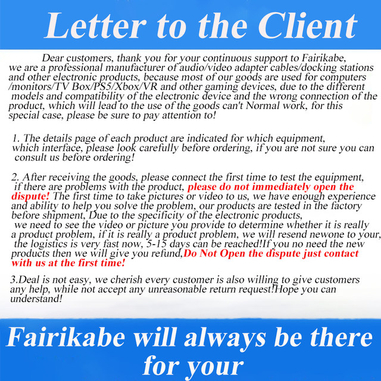
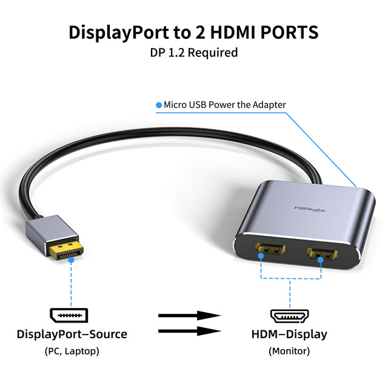
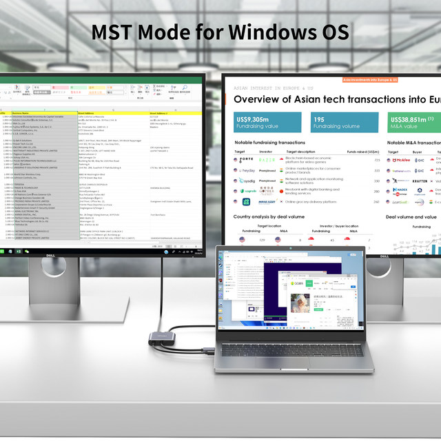
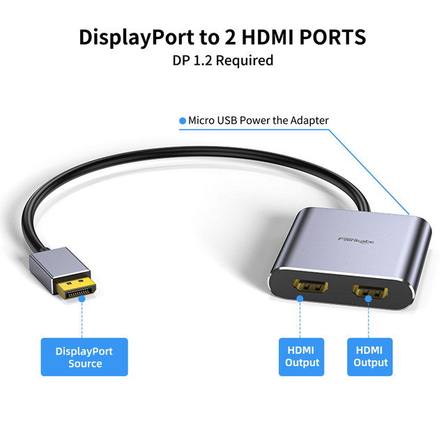
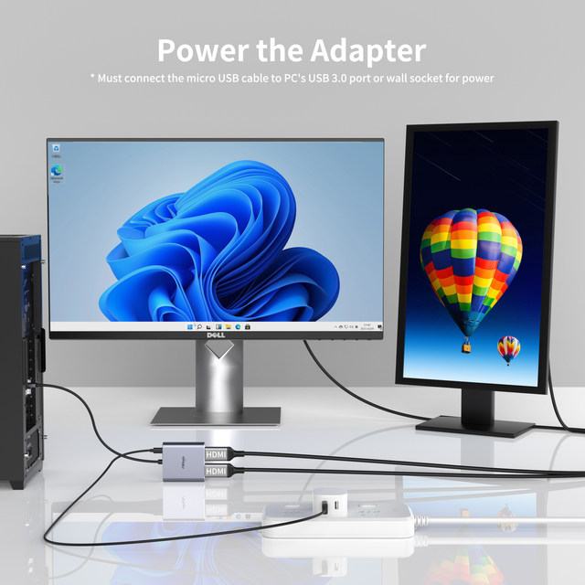
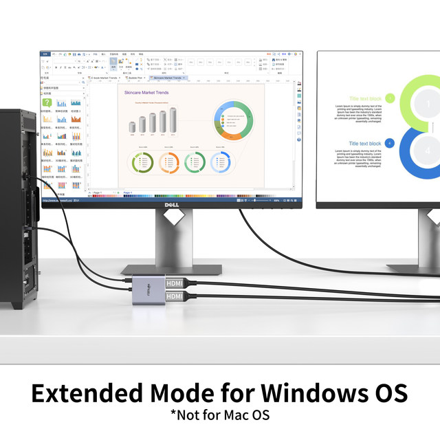
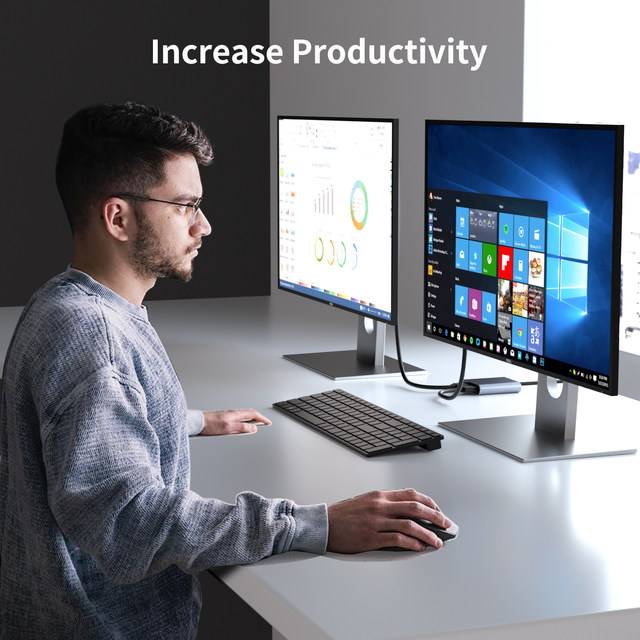
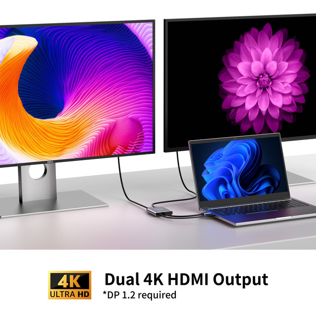
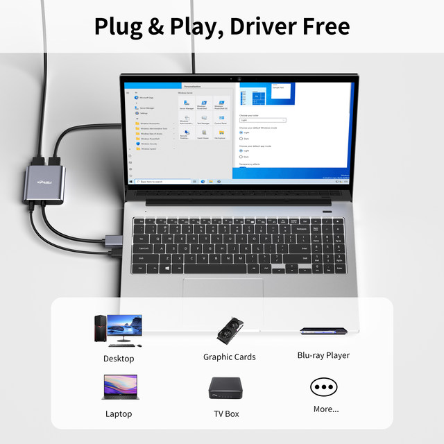
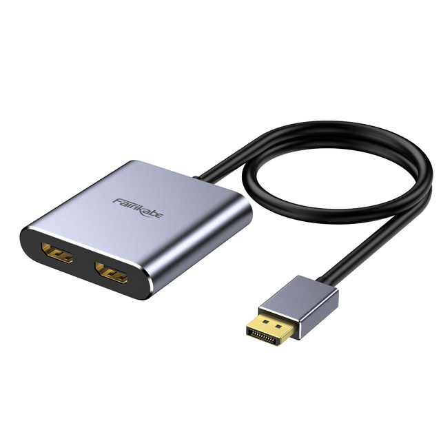

Fairikabe DP To Dual HDMI Hub 4K 60Hz Display Port To HDMI Splitter DP 1.2 to 2HDMI Monitor For Laptop MST Extend Mode Windows

【HDMI Splitter】fairikabe Displayport to Dual HDMI splitter acts as a splitter to convert the DP signal into two HDMI signals, which supports mirror mode(AAA) and extended mode (ABB & ABC) for Windows. Please Note our hub DP Port must directly connect the laptop(so the laptop must have DP Port,then it can show ABC Mode)*** Mac OS only suppors SST mode (AAA/ABB), and the MicroUSB cable must be connected before us
【4K UHD Video】fairikabe Displayport to dual HDMI splitter for dual monitors extended display compliant with DP 1.2 standard and HDMI 2.0, the resolution of single HDMI screen up to 4K@60Hz, and the resolution of dual HDMI screen up to 4K@60Hz, to reach this resolution, require both of your monitors support the same resolution
【Easy to Use】 Plug and play, no need to install drivers. This DP to dual HDMI splitter extended display 2 monitors, connection way: 1.The displayport source connects with the DP port on the PC or laptop side; 2.Connect the MicroUSB cable to power the splitter; 3.The 2 HDMI female port hook up with the monitor with HDMI cables (not included)
【Stable Transmission】 24k gold-plated ports for more stable signal transmission, its multiple shielded cables to help achieve more accurate data streaming, and the 1.5ft long cable add more flexibility for desktop storage, won't hang on PC
【Universally Compatible】Multi-stream transmission (MST) displayport hub compatibles with DP 1.2 desktop/laptop/graphics cards Windows system.
Note:If you connect two monitors at the same time, in order to achieve 4K, both monitors must support 4K. If the two monitors are different, for example, one monitor supports 4K@60Hz and the other monitor supports 1080P@60Hz, then in principle they are displayed according to the lowest resolution. It will appear that the monitor that supports 1080P can achieve 60Hz, but the monitor that supports 4K@60Hz can only display 4K@30Hz. To avoid this situation, please use two monitors that both support 4K!








